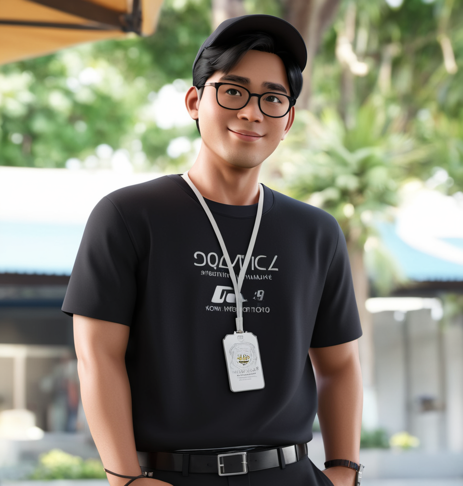
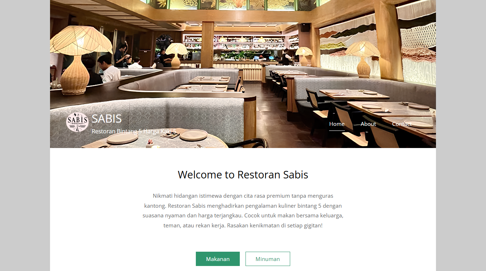

Tentang Saya
Perkenalkan nama saya Muh. Aurelia Mada Al-Farisi, biasa dipanggil faris. Saat ini sedang menumpuh masa perkuliahan di Universitas Teknologi Digital Indonesia sebagai Mahasiswa semester 6. Yang dimana, semester 6 adalah masa masa awal penuh perjuangan membahas tentang tugas, laporan, judul dan materi tentang skripsi. Doakan saja semoga semester depan bisa melaksanakan magang dan bisa lulus tanpa skripsi.
Proyek Terbaru
Proyek ini adalah website sebuah restoran yang bernama Sabis Restoran. Restoran ini menyediakan berbagai macam sajian makanan dan minuman dengan rasa yang penuh cita rasa dan harga tidak menguras kantong seperti pada tagline restoran ini "Restoran Bintang 5 Harga kaki 5". Restoran ini memiliki beberapa fitur dimana admin dapat melakukan log in dan akan mengatur semua hal-hal yang berkaitan dengan restoran.
Kontak
📲No Telepon: +62 896 3773 8359
📧Email: alfariziemada@gmail.com
📷Instagram: @farisiajaa_
🔗LinkedIn: www.linkedin.com/in/muhammad-aurelia-mada-al-farisi-457a3024a/